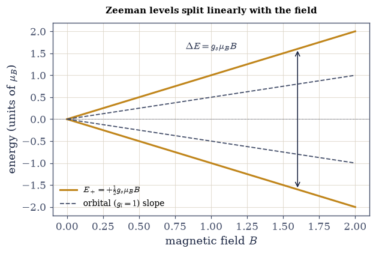
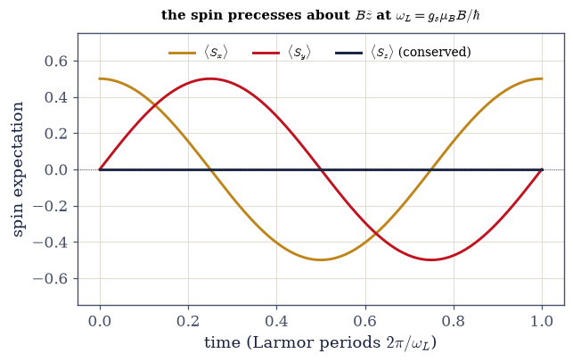
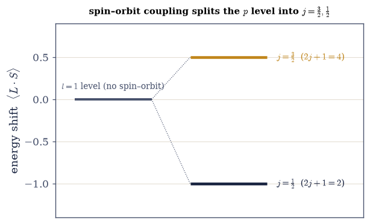
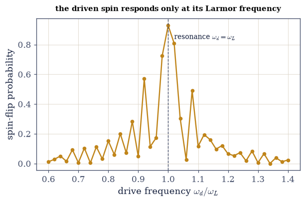

6.18 Spin, Magnetic Moments, and the Electron in a Magnetic Field#
Notebook overview#
Movement IV opens by settling an account. Movement I built the kinematics of the electron’s spin — the two-state space (§6.4), the Pauli algebra and uncertainty (§6.6), precession and Rabi flopping (§6.7), the Bloch sphere (§6.8) — and Movement III sharpened it: §6.14 derived spin-\(\tfrac12\) as the smallest representation of the rotation algebra, and §6.15 showed that orbital motion cannot produce half-integers. What none of that supplied is the physics: what spin does in the world. That is this notebook.
The new content is four things, and we take pains not to re-teach what is already built. First, the electron’s magnetic moment and its anomalous \(g\)-factor: a spin produces a magnetic moment about twice as strong as the same amount of orbital angular momentum would — \(g_s\approx2\) against \(g_l=1\) — a fact Schrödinger’s theory cannot explain, which falls out exactly of the Dirac equation (\(g=2\)) and whose tiny excess \(g-2\) is the most precisely tested prediction in all of physics (QED). Second, the Zeeman energy \(H=-\boldsymbol\mu\cdot\mathbf B\): a magnetic field gives the two spin states different energies, splitting them by \(g_s\mu_B B\) and precessing a tilted spin at the \(g\)-corrected Larmor frequency — the working principle of NMR, ESR, MRI, and the spin qubit. This is where the Stern–Gerlach experiment of §6.4 comes full circle: the beam split because the two spin states have different energies in a field. Third, the composite state: an electron is a spatial orbital tensored with a spin, \(|n,l,m_l\rangle\otimes|m_s\rangle\), so each hydrogen shell’s \(n^2\) orbitals become \(2n^2\) states — the factor of two that §6.17 had to assume, now derived, and the origin of the periodic table’s row lengths. Fourth, the spin–orbit coupling \(\propto\mathbf L\cdot\mathbf S\): the electron’s spin couples to the magnetic field of its own orbital motion, splitting each level into total-angular-momentum sublevels — the atomic fine structure. Evaluating \(\mathbf L\cdot\mathbf S\) turns out to require knowing how to add the angular momenta \(\mathbf L\) and \(\mathbf S\), which is exactly the subject of the next notebook: §6.18 poses the question that §6.19 answers.
As in every Volume VI notebook, each exercise opens with a crystal-clear statement and enumerated parts, each naming the exact operation — the spin matrices \(\mathbf S=\tfrac\hbar2\boldsymbol\sigma\)
(from §6.6/§6.14), the Zeeman Hamiltonian as a matrix, numpy.kron for the spatial\(\otimes\)spin product,
scipy.linalg.expm for precession, numpy.linalg.eigh for spectra, and \(\mathbf L\cdot\mathbf S=
\tfrac12(J^2-L^2-S^2)\) from the §6.14 angular-momentum matrices.
Conventions and units. We set \(\hbar=1\) and the Bohr magneton \(\mu_B=1\), so energies are measured in units of \(\mu_B\) and the field \(B\) in the corresponding units; the \(g\)-factors are \(g_l=1\) (orbital) and \(g_s\approx2.0023\) (spin). The field is along \(z\). The spin operators are \(\mathbf S= \tfrac\hbar2\boldsymbol\sigma\), i.e. the \(j=\tfrac12\) matrices of §6.14. Anti-redundancy: the Pauli algebra (§6.6), the Bloch sphere (§6.8), and the mechanics of precession/Rabi (§6.7) are used and cited here, not re-derived. See Sakurai & Napolitano and Griffiths (spin, magnetic moments, the Zeeman effect, spin–orbit coupling); and Notebooks §6.4 (Stern–Gerlach), §6.6 (Pauli), §6.7 (precession/Rabi), §6.8 (tensor product/entanglement), §6.14 (spin from the algebra), §6.17 (the \(2n^2\) asserted).
Theory in brief#
Spin as intrinsic angular momentum (recap, cited)#
The electron carries an intrinsic angular momentum \(\mathbf S\) with \(s=\tfrac12\), living in a two-dimensional internal space with \(\mathbf S=\tfrac\hbar2\boldsymbol\sigma\) (§6.6, §6.14). It has no position-space wavefunction — it is not “the electron spinning,” but a genuine internal degree of freedom the rotation algebra demands (§6.14) and orbital motion cannot supply (§6.15). We take this as given and turn to the new physics.
The magnetic moment and the \(g\)-factor#
A charged particle with angular momentum has a magnetic moment. For orbital angular momentum,
with \(\mu_B\) the Bohr magneton. The spin’s \(g_s\approx2\) means a spin produces twice the magnetic moment per unit angular momentum that orbital motion does — an anomaly Schrödinger’s theory cannot explain. It emerges exactly from the Dirac equation (\(g=2\)), and the excess \(g-2\approx0.00232\) is a triumph of quantum electrodynamics (both are horizons here).
The Zeeman Hamiltonian and level splitting#
In a field \(\mathbf B=B\hat z\), the spin energy is
with eigenstates spin-up/down split by \(\Delta E=g_s\mu_B B\). This Zeeman splitting is the energy behind the two Stern–Gerlach beams (§6.4, full circle): the beam split because the two spin states have different energies in a field. (The full atomic Zeeman effect adds the orbital moment, \(g_l\mathbf L+g_s \mathbf S\).)
Larmor precession at the \(g\)-corrected frequency#
A spin tilted from \(\mathbf B\) precesses about it (§6.7) at the Larmor frequency
now with the \(g\)-factor made physical. This is the resonance frequency probed by NMR, ESR/EPR, and MRI, and the frequency at which a spin qubit is driven. The precession itself is the §6.7 result; what is new is that \(\omega_L\) is a measurable property through \(g\).
The composite state: spatial \(\otimes\) spin#
The full electron state is the tensor product of its spatial and spin parts,
labelled by \(n,l,m_l,m_s=\pm\tfrac12\) (numpy.kron). Spin’s factor-two degeneracy, independent of the
spatial state, turns hydrogen’s \(n^2\) orbitals (§6.17) into \(2n^2\) states — \(2,8,18,32\), the factor of two
now derived. This is the origin of the periodic table’s rows (filled by the Pauli exclusion principle
of §6.20). A spatial–spin state can be a product or, in general, entangled (§6.8) — and spin–orbit
coupling entangles them.
Spin–orbit coupling: the bridge#
In the atom’s rest frame the electron sees the nucleus orbiting it, a current loop whose magnetic field couples to the spin — the spin–orbit interaction \(H_{SO}\propto\mathbf L\cdot\mathbf S\). With \(\mathbf J=\mathbf L+\mathbf S\),
so spin–orbit coupling splits each orbital level into distinct-\(j\) sublevels (an \(l=1\) level splits into \(j=\tfrac32\) and \(j=\tfrac12\)) — the fine structure of atomic spectra (the sodium D-line doublet), computed perturbatively in §6.21. But evaluating \(\mathbf L\cdot\mathbf S\) requires the eigenstates of \(J^2=(\mathbf L+\mathbf S)^2\) — i.e. how to add \(\mathbf L\) and \(\mathbf S\). That is exactly the next notebook (§6.19).
Setup#
The data are the series palette, the conventions \(\hbar=\mu_B=1\) with the two \(g\)-factors \(g_l=1\) and \(g_s\approx2.0023\), the spin-\(\tfrac12\) matrices \(\mathbf S=\tfrac\hbar2 \boldsymbol\sigma\) every exercise below acts on, and the Larmor frequency \(\omega_L=g\mu_B B/\hbar\) — a one-line conversion from field strength to frequency, an input to the physics rather than the physics itself. The instrument is the generic construction of \(J_x,J_y,J_z,J^2,J_\pm\) for arbitrary \(j\), built from scratch in §6.14 and restated here so both the spin and the orbital matrices are on hand. The two operators this notebook is about are deliberately absent: you build the Zeeman Hamiltonian in Exercise 2, the spin–orbit operator \(\mathbf L\cdot\mathbf S\) in Exercise 6, and the driven-spin evolution in Exercise 7.
The Setup below holds this notebook’s data and instruments — nothing you are asked to build. It is collapsed so the building stays yours; expand it whenever you want the details.
Exercise 1 — The magnetic moment and the \(g\)-factor#
Angular momentum and magnetism come together: a charged particle with angular momentum carries a magnetic moment, \(\boldsymbol\mu_L=-g_l(\mu_B/\hbar)\mathbf L\) with \(g_l=1\) for orbital motion and \(\boldsymbol\mu_S=-g_s(\mu_B/\hbar)\mathbf S\) with \(g_s\approx2.0023\) for spin Eq. 590. The honest way to compare the two is the gyromagnetic ratio \(\gamma=g\mu_B/\hbar\), the moment produced per unit angular momentum, because it divides out how much angular momentum each kind carries and leaves nothing but the \(g\)-factor. That \(g_s\) is about twice \(g_l\) is the electron’s anomalous magnetic moment — genuinely new physics, unexplainable in Schrödinger’s theory, exact in the Dirac equation (\(g=2\)), and in its excess \(g-2\approx0.00232\) the most precisely tested prediction of quantum electrodynamics.
Compute the two gyromagnetic ratios \(\gamma_S=g_s\mu_B/\hbar\) and \(\gamma_L=g_l\mu_B/\hbar\).
Compute the ratio \(\gamma_S/\gamma_L=g_s/g_l\) and confirm it is \(\approx2\) — spin produces twice the magnetic moment of the same orbital angular momentum.
orbital g-factor g_l = 1.0 spin g-factor g_s = 2.0023193
gyromagnetic ratios (moment per unit angular momentum): γ_L = 1.0000 γ_S = 2.0023
ratio γ_S / γ_L = g_s / g_l = 2.0023
→ a spin produces ~TWICE the magnetic moment of the same orbital angular momentum
g_s=2 is exact in the Dirac equation; the excess g−2 ≈ 0.00232 is the QED anomaly (measured to 12 digits)
Validation 1#
✓ the electron spin g-factor is ≈2, twice the orbital g-factor — spin's anomalous magnetic moment [max|Δ| = 0.0023193 (rtol=1e-06, atol=0.01)]
True
Exercise 2 — The Zeeman Hamiltonian and level splitting#
Put that moment in a field \(\mathbf B=B\hat z\) and it acquires an energy, \(H=-\boldsymbol\mu_S \cdot\mathbf B=g_s(\mu_B/\hbar)B\,S_z=\tfrac12 g_s\mu_B B\,\sigma_z\) Eq. 591 — the Zeeman Hamiltonian, a \(2\times2\) matrix that is nothing but the spin operator \(S_z\) scaled by the field. It is already diagonal in the \(S_z\) basis, so its eigenvalues are \(\pm\tfrac12 g_s \mu_B B\) and the two spin states are separated by \(\Delta E=g_s\mu_B B\): a gap that opens linearly from zero as the field is turned on, with the \(g\)-factor as its slope. This is the energy behind the two Stern–Gerlach beams (§6.4, full circle) — the beam split because these two states cost different energy in a field. (The full atomic Zeeman effect adds the orbital moment, \(g_l\mathbf L+g_s\mathbf S\).)
Write
zeeman_hamiltonian(B, g), returning \(H=g\mu_B B\,S_z/\hbar\) on the spin-\(\tfrac12\) space.Diagonalize it with
numpy.linalg.eighat several field strengths.Confirm the two spin states split by \(\Delta E=g_s\mu_B B\).
Plot the two levels against \(B\) and read off the linear splitting.
Zeeman splitting ΔE = g_s μ_B B:
B=0.5: E = (-0.5006, +0.5006), ΔE = 1.00116 (g_s μ_B B = 1.00116)
B=1.0: E = (-1.0012, +1.0012), ΔE = 2.00232 (g_s μ_B B = 2.00232)
B=2.0: E = (-2.0023, +2.0023), ΔE = 4.00464 (g_s μ_B B = 4.00464)
the two spin states cost different energy in a field — this is why the Stern–Gerlach beam split (§6.4)
Validation 2#
✓ the Zeeman splitting is g μ_B B [got 3.00348 vs expected 3.00348 (rtol=1e-06, atol=1e-09)]
True

Fig. 560 The Zeeman splitting. The two spin energy levels \(E_\pm=\pm\tfrac12 g_s\mu_B B\) as a function of the magnetic field \(B\). At \(B=0\) they are degenerate — the field-free spin has no preferred direction — but any field lifts the degeneracy, the up and down states diverging linearly with a gap \(\Delta E=g_s\mu_B B\) (amber). This is the energy that a Stern–Gerlach field gradient converts into the two separated beams of §6.4, now understood: the beam split because these two states have different energies in a field. The slope carries the \(g\)-factor, so measuring the splitting measures \(g\) — the basis of electron-spin resonance. For comparison, the orbital moment would give a gap only half as steep (\(g_l=1\), grey dashed).#
Exercise 3 — Larmor precession at the \(g\)-corrected frequency#
A spin aligned with the field simply sits at one of those two energies; a spin tilted from it
is a superposition of both, and the phase between them turns — the spin precesses about
\(\mathbf B\) (§6.7). The rate is the Zeeman gap divided by \(\hbar\): the
Larmor frequency \(\omega_L=g_s\mu_B B/\hbar\) Eq. 592, supplied by the
larmor_frequency helper. Prepare the spin along \(x\), i.e.
\((|\!\uparrow\rangle+|\!\downarrow\rangle)/\sqrt2\), and the transverse component follows
\(\langle S_x\rangle(t)=\tfrac12\cos\omega_L t\) while \(\langle S_z\rangle\) — the projection along
\(\mathbf B\), fixed by energy conservation — does not move at all. The mechanics are entirely those
of §6.7; what is new is that \(\omega_L\) now carries the physical
\(g\)-factor, which makes it the resonance frequency of NMR, ESR, and MRI, and the frequency at
which a spin qubit is driven.
Start a spin along \(x\) and evolve it under the
zeeman_hamiltonianyou wrote in Exercise 2, usingscipy.linalg.expm(the time-evolution method of §6.7).Compute \(\langle S_x\rangle(t)\) and confirm it is \(\tfrac12\cos\omega_L t\) with \(\omega_L=g_s\mu_B B/\hbar\).
Plot all three components and watch the spin precess rigidly about the field.
Larmor frequency ω_L = g_s μ_B B/ℏ = 2.00232
⟨S_x⟩(t) matches ½cos(ω_L t): max deviation = 2.22e-16
this is the resonance frequency of NMR, ESR, and MRI — and how a spin qubit is driven
Validation 3#
✓ the spin precesses at the Larmor frequency ω_L = g μ_B B/ℏ, with ⟨S_x⟩(t)=½cos(ω_L t)
True

Fig. 561 Larmor precession. A spin prepared along \(x\) in a field \(B\hat z\), evolved under the Zeeman Hamiltonian (scipy.linalg.expm, the method of §6.7). The longitudinal component \(\langle S_z\rangle\) (ink) stays fixed at zero — the field does no work on the spin, so the energy, and the projection along \(\mathbf B\), are conserved — while the transverse components \(\langle S_x\rangle\) (amber) and \(\langle S_y\rangle\) (red) oscillate a quarter-cycle out of phase: the spin precesses rigidly about the field at the Larmor frequency \(\omega_L=g_s\mu_B B/\hbar\), like a gyroscope under gravity. Nothing here is new mechanics — it is the precession of §6.7 — but the frequency is now a physical, measurable quantity carrying the \(g\)-factor, and driving a second field at exactly \(\omega_L\) is how magnetic resonance flips the spin (Exercise 7).#
Exercise 4 — The composite state: spatial \(\otimes\) spin#
An electron is not a wavefunction or a spin but both at once, and the two live in different
spaces, so the full state is their tensor product \(|\Psi\rangle=|n,l,m_l\rangle\otimes|m_s
\rangle\) Eq. 593, assembled numerically with numpy.kron and of dimension
\((2l+1)\times2\). Operators inherit the same structure: a spin operator acts on the composite
space as \(I_{\text{orb}}\otimes S_z\) and an orbital operator as \(L_z\otimes I_{\text{spin}}\),
each leaving the other’s factor alone, so the two commute. That independence is the whole
point — it is why spin multiplies the count of states in the next exercise rather than
rearranging them, and why \(m_l\) and \(m_s\) can be specified together as two of the electron’s four
quantum numbers.
Form \(|\Psi\rangle=|\text{orbital}\rangle\otimes|\text{spin}\rangle\) with
numpy.kronfrom an orbital state in the \((2l+1)\)-dimensional \(l\)-space and a spin state \(|m_s\rangle\), and check its dimension is \((2l+1)\times2\).Build \(L_z\otimes I_{\text{spin}}\) and \(I_{\text{orb}}\otimes S_z\) and read off \(\langle L_z\rangle=m_l\) and \(\langle S_z\rangle=m_s\) in that state.
Confirm the two operators commute.
orbital space dim = 3 (l=1), spin space dim = 2 → composite dim = 6
⟨L_z⟩ = +1.0 (m_l=+1), ⟨S_z⟩ = +0.5 (m_s=+½)
orbital and spin operators commute (act on independent factors): True
Validation 4#
✓ the electron's state is orbital⊗spin (numpy.kron): it carries n,l,m_l,m_s and orbital/spin operators act on independent, commuting factors
True
Exercise 5 — The \(2n^2\) counting: completing hydrogen#
Hydrogen’s shell \(n\) holds \(n^2\) spatial orbitals (§6.17), which is the sum \(\sum_{l=0}^{n-1}(2l+1)\) over the subshells. Because the spin factor is independent of the spatial one Eq. 593, every one of those orbitals comes in two copies, \(m_s=\pm\tfrac12\), and the shell holds \(2n^2=2,8,18,32\) states. That is the factor of two §6.17 had to assume, now derived — and, once the Pauli exclusion principle of §6.20 forbids two electrons from sharing a state, it is the length of each row of the periodic table. Spin completes the atom.
Count the spatial orbitals per shell as \(\sum_{l<n}(2l+1)\) for \(n=1,\dots,4\) and confirm the total is \(n^2\).
Multiply by the two spin states and confirm the shell capacities are \(2n^2=2,8,18,32\).
shell states with spin = n² spatial × 2 spin = 2n²:
n=1: n²=1 orbitals × 2 = 2 states (periodic-table row 1: 2)
n=2: n²=4 orbitals × 2 = 8 states (periodic-table row 2: 8)
n=3: n²=9 orbitals × 2 = 18 states (periodic-table row 3: 18)
n=4: n²=16 orbitals × 2 = 32 states (periodic-table row 4: 32)
the factor of 2 that §6.17 had to assume is now DERIVED — it is the spin degree of freedom
(with the Pauli exclusion principle of §6.20, these 2n² states are the periodic table's rows)
Validation 5#
✓ each hydrogen shell holds 2n² states = 2,8,18,32 — spin supplies the factor of two completing hydrogen's degeneracy
True
Exercise 6 — Spin–orbit coupling \(\mathbf L\cdot\mathbf S\)#
In the atom’s rest frame the electron sees the nucleus orbiting it, a current loop whose magnetic
field couples to its spin: the spin–orbit interaction \(H_{SO}\propto\mathbf L\cdot\mathbf S\)
Eq. 594. On the orbital\(\otimes\)spin space of Exercise 4 the operator is
\(\mathbf L\cdot\mathbf S=L_x\otimes S_x+L_y\otimes S_y+L_z\otimes S_z\) — three numpy.kron
products, each pairing an \(l\)-matrix with a spin-\(\tfrac12\) matrix, both from
angular_momentum_matrices. Unlike everything before it, this operator does not commute with
\(L_z\) or \(S_z\) separately: it entangles the two factors. Writing \(\mathbf J=\mathbf L+\mathbf S\)
gives \(\mathbf L\cdot\mathbf S=\tfrac12(J^2-L^2-S^2)\), so its eigenvalues are
\(\tfrac12[j(j+1)-l(l+1)-s(s+1)]\) (with \(\hbar=1\)), one for each \(j=l\pm\tfrac12\), each carrying
\(2j+1\) states. An \(l=1\) level therefore splits into \(j=\tfrac32\) and \(j=\tfrac12\) — the fine
structure of atomic spectra, the reason the sodium D line is a doublet, computed perturbatively
in §6.21. Reading those sublevels off required diagonalizing
\(J^2=(\mathbf L+\mathbf S)^2\), i.e. knowing how to add \(\mathbf L\) and \(\mathbf S\) — exactly the
next notebook (§6.19).
Write
spin_orbit_LS(l, s=0.5), assembling \(\mathbf L\cdot\mathbf S\) on the orbital\(\otimes\)spin space as the sum of the threenumpy.kronproducts of theangular_momentum_matricesat \(j=l\) and \(j=s\). Write this one yourself — the implementation is the lesson.Diagonalize it with
numpy.linalg.eighfor \(l=1\) and \(l=2\), and compare the distinct eigenvalues to \(\tfrac12[j(j+1)-l(l+1)-s(s+1)]\) for \(j=l\pm\tfrac12\).Confirm the multiplicities are \(2j+1\), so each orbital level splits into exactly two sublevels.
Draw the split \(l=1\) level and its two \(j\) sublevels.
spin–orbit L·S = ½(J² − L² − S²) eigenvalues (ℏ=1):
l=1: L·S eigenvalues [np.float64(-1.0), np.float64(0.5)] (predicted [-1.0, 0.5])
j = [1.5, 0.5] with multiplicities [4, 2] (= 2j+1); level splits into two
l=2: L·S eigenvalues [np.float64(-1.5), np.float64(1.0)] (predicted [-1.5, 1.0])
j = [2.5, 1.5] with multiplicities [6, 4] (= 2j+1); level splits into two
Validation 6#
✓ L·S = ½(J²−L²−S²) splits a level into j-multiplets ½[j(j+1)−l(l+1)−s(s+1)] — the origin of fine structure [max|Δ| = 0 (rtol=1e-06, atol=1e-09)]
True

Fig. 562 Fine structure: a level split by \(\mathbf L\cdot\mathbf S\). An orbital \(p\) level (\(l=1\)), degenerate without spin–orbit coupling (grey, centre), splits under \(H_{SO}\propto\mathbf L\cdot\mathbf S\) into two total-angular-momentum sublevels: \(j=\tfrac32\) (raised, amber) and \(j=\tfrac12\) (lowered, ink), shifted by \(\tfrac12[j(j+1)-l(l+1)-s(s+1)]\) (here \(+\tfrac12\) and \(-1\) in units of the coupling). The \(j=\tfrac32\) level holds \(2j+1=4\) states and the \(j=\tfrac12\) holds \(2\), together the \(6=(2l+1)\times2\) states of the spin–orbit-coupled \(p\) shell. This is the fine structure of atomic spectra — the reason the sodium D line is a close doublet — and computing its size (§6.21) is a perturbation on the hydrogen levels of §6.17. Reading off these sublevels required diagonalizing \(J^2=(\mathbf L+\mathbf S)^2\): the next notebook builds exactly that, the addition of angular momenta.#
Exercise 7 — The electron-spin qubit in a field (student)#
A static field \(B\hat z\) turns one electron spin into a qubit: two levels separated by the
Zeeman gap \(\hbar\omega_L\) Eq. 591, Eq. 592. To move it between them, add a weak
transverse oscillating field \(B_1\cos(\omega_d t)\hat x\), which makes the Hamiltonian
time-dependent, \(H(t)=\tfrac12\omega_0\sigma_z+\tfrac12\omega_1\cos(\omega_d t)\sigma_x\). A
time-dependent \(H\) has no single matrix exponential, so the evolution is built by stepping:
freeze \(H\) at the current time, exponentiate it over a short \(dt\) (scipy.linalg.expm), apply it,
advance. Started from spin-down, the probability of ending spin-up is negligible for almost every
drive frequency, but rises to a sharp peak at \(\omega_d=\omega_L\): only there is the drive in step
with the qubit, and only there does it coherently pump Rabi oscillations
(§6.7) between the two states. That peak is magnetic resonance — the
line ESR and NMR sweep for, the pulse that executes a gate on a spin qubit, Movement I’s
kinematics meeting this notebook’s energetics.
Write
flip_probability(w_drive), evolving a spin from spin-down under \(H(t)\) above in small steps withscipy.linalg.expmand returning the probability of having flipped to spin-up. Write this one yourself — the implementation is the lesson.Scan the drive frequency \(\omega_d\) across the Larmor frequency and record the flip probability at each.
Show it peaks at \(\omega_d=\omega_L\) and is small far off resonance.
Plot the resonance line.
qubit gap (Larmor) ω_L = 2.0023; drive amplitude ω₁ = 0.3604
spin-flip probability peaks at ω_d = 2.0023 (= ω_L: resonance)
on resonance P_flip = 0.928; far off resonance P_flip ≈ 0.012
this resonance is how ESR/NMR and electron-spin quantum processors address a single spin
Validation 7#
✓ an electron spin in a field is a qubit addressed at its Larmor frequency: the driven spin flips resonantly, peaking sharply at ω_d=ω_L
True

Fig. 563 Magnetic resonance: the spin qubit’s absorption line. The probability that a weak oscillating field flips the electron spin, against the drive frequency \(\omega_d\) (in units of the Larmor frequency). The response is negligible almost everywhere but rises to a sharp peak exactly at \(\omega_d=\omega_L\) — the drive is resonant with the qubit gap \(\hbar\omega_L=g_s\mu_B B\), and only then does it coherently drive Rabi oscillations (§6.7) between spin-down and spin-up. This resonance is magnetic resonance: sweep the frequency (or the field) and the sample absorbs energy only at the line, whose position measures \(g\) and whose surroundings report on the local environment — the physics of ESR and NMR spectroscopy, of MRI contrast, and of how a microwave pulse executes a gate on an electron-spin qubit. Movement I’s kinematics and this notebook’s energetics meet in a single controllable two-level system.#
Exercise 8 — The electron, completed (synthesis)#
Movement I taught us how a spin behaves — its states, its algebra, its precession, its sphere. This notebook gave that spin a physical body: a magnetic moment twice as strong as motion would grant (\(g_s\approx2\), a Dirac/QED fact), an energy in a field that splits and turns it (the Zeeman effect and Larmor precession, the engine of magnetic resonance), a place in the atom that doubles every shell and sets the periodic table’s rhythm (\(2n^2\), the factor of two now derived), and a coupling to its own orbit that will split the spectral lines (\(\mathbf L\cdot\mathbf S\)).
There is no new computation here: the completed electron is the result. It is now fully described — a spatial wavefunction and a spin, four quantum numbers, one particle. But the spin–orbit coupling posed a question we cannot yet answer: to evaluate \(\mathbf L\cdot\mathbf S\) we had to diagonalize \(J^2=(\mathbf L+\mathbf S)^2\) — we needed the eigenstates of the sum of two angular momenta. The next notebook (§6.19) builds exactly that machinery, the addition of angular momenta and the Clebsch–Gordan coefficients, the last tool required before fine structure (§6.21) and the many-electron atom (§6.20).
Notice how the number two keeps appearing: two spin states, twice the magnetic moment, \(2n^2\) electrons per shell, a \(g\)-factor of \(2\). It is the same two each time — the dimension of the smallest nonzero angular momentum, the \(j=\tfrac12\) of §6.14 — propagating outward from an algebra into the magnetism of matter and the length of a row of the periodic table.
Notebook summary#
The physics of spin — the opening of Movement IV.
The \(g\)-factor Eq. 590: spin’s magnetic moment is \(g_s\approx2\) times \(\mu_B\) per unit angular momentum — twice the orbital \(g_l=1\) (Dirac’s \(g=2\) plus the QED anomaly \(g-2\)).
The Zeeman effect Eq. 591: \(H=\tfrac12 g_s\mu_B B\,\sigma_z\) splits the spin states by \(\Delta E=g_s\mu_B B\) — the energy behind the Stern–Gerlach beams (§6.4).
Larmor precession Eq. 592: a tilted spin precesses at \(\omega_L=g_s\mu_B B/\hbar\) (
scipy.linalg.expm) — the frequency of NMR, ESR, and MRI.Spatial \(\otimes\) spin Eq. 593: the electron state is \(|n,l,m_l\rangle\otimes|m_s \rangle\) (
numpy.kron); spin’s factor of two makes hydrogen’s shells hold \(2n^2=2,8,18,32\) states.Spin–orbit coupling Eq. 594: \(\mathbf L\cdot\mathbf S=\tfrac12(J^2-L^2-S^2)\) splits a level into \(j=l\pm\tfrac12\) sublevels — fine structure — and requires adding \(\mathbf L\) and \(\mathbf S\).
The electron now has a body and a place in the atom. What remains is to learn to add its two angular momenta — the subject of the next notebook.
Outlook#
The addition of angular momenta and Clebsch–Gordan coefficients (§6.19): the eigenstates of \(\mathbf J=\mathbf L+\mathbf S\), needed to evaluate \(\mathbf L\cdot\mathbf S\).
Identical particles and the Pauli exclusion principle (§6.20): filling the \(2n^2\) states to build atoms and the periodic table.
Fine structure (§6.21): the spin–orbit and relativistic corrections by perturbation theory; the anomalous Zeeman effect.
The electron’s \(g-2\) and QED; the Dirac equation’s \(g=2\) (horizons — the deep origin of the anomalous moment).
Cross-reference §6.4 (Stern–Gerlach), §6.6 (Pauli), §6.7 (precession/Rabi), §6.8 (tensor product/entanglement), §6.14 (spin from the algebra), §6.17 (the \(2n^2\)), and forward to §6.19, §6.20, §6.21.